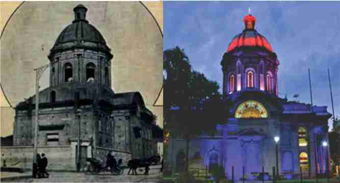

Built under the Presidency of Francisco Solano López on October 13, 1863, it was dedicated to the Virgin Our Lady of the Assumption, patron saint of this city.
The work began in the first days of January 1864 under the direction of the Italian architect Alessandro Ravizza, but shortly after it was suspended for more than 70 years due to the start of the War against the Triple Alliance.
Finally, on October 12, 1936 it was inaugurated, also becoming the National Pantheon of Heroes since the ashes of Marshal Solano López and the Unknown Soldier of the Chaco War, among other worthy heroes of the Homeland, rest here since then.
It should be noted that this culmination occurred during the mandate of the then Mayor of Asunción José P. Guggiari. The direction of the final works was in charge of the Polish engineer Bruno Paproscky, with the collaboration of the Paraguayan professionals Paleari, Bedoya, Pastor Gómez and Roque Saldívar y Alfaro.
On March 1, 1939, the ashes of the remains of some heroes of independence and some heroes of both the Triple Alliance war and the Chaco war were moved.
Later, the marble altar was placed in the center of which stands the image of the Virgin of the Assumption, which was transferred from the house of the "mayordoma" Doña María Haedo widow of Abente. This was acquired from a workshop in Naples, in 1742, by the canon of the Cathedral, Don Antonio Delgadillo y Atienza.
In the year 1950, Pope Pius XII defined the Dogma of the Assumption of the Blessed Virgin Mary. In 1951, the National Government and the Paraguayan Episcopate requested the Pope to proclaim the Virgin Mary of the Assumption as patron saint of the Republic of Paraguay and of the Armed Forces of the Nation.
On July 13, 1951, the Pope declares: "Blessed Virgin Mary of the Assumption to heaven, main heavenly Patron before God, of the entire Republic of Paraguay and of the Armed Forces of the Nation." The Patron Saint festival is celebrated every August 15.
From an architectural point of view, this work is considered Neoclassical in style.
It is inspired by the Monument "Le Panthéon" des Invalides (Paris / France) and Santa Maria de Carignano in Genoa (Italy). Restoration work began in 2011 and the National Secretary of Culture decided to declare the Oratorio Nuestra Señora de la Asunción and the National Pantheon of Heroes as National Cultural Heritage.
In its interior rest the remains of important figures of national history: Marshal Francisco Solano Lopez, the unknown soldier, Carlos Antonio López, first constitutional president, General José Eduvigis Díaz Vera, hero of the War of the Triple Alliance, Marshal Jose Felix Estigarribia, Julia Miranda Cueto, former first lady, Children martyrs of the battlefield of Acosta Ñu, Eusebio Ayala, Head of State during the Chaco War, Emiliano R. Fernández, Paraguayan epic poet and musician.